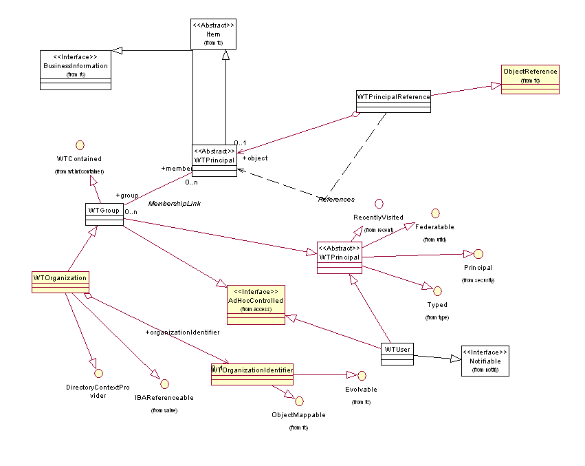
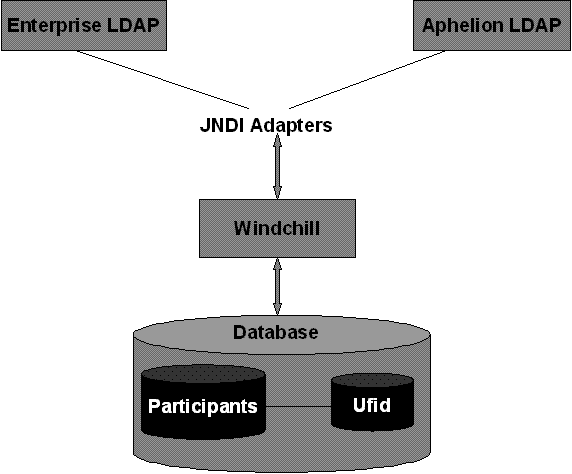
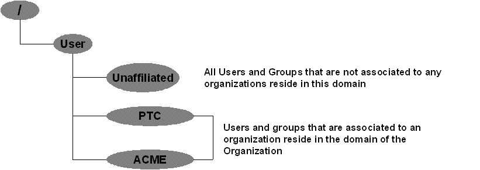

Org package � Organization Service
See: Description
| Interface | Description |
|---|---|
| _OrganizationOwned | |
| _OrganizationOwnedIdentificationObjectNamespace | |
| _OrganizationOwnedImpl | |
| DirectoryContextProvider |
This interface provides a set of APIs which could be used to implement
the necessary functionality of performing CRUD operations on participants
within a given directory context.
|
| LdapServicesManager |
This interface provides API definitions to principal data in LDAP.
|
| OrganizationOwned |
This interface defines a set of APIs that needs to be used to set or
get organization related information for objects that are organization
owned.
|
| OrganizationOwnedIdentificationObjectNamespace |
This interface defines API's to get and set organization related information
for name space objects that are organization owned.
|
| OrganizationOwnedImpl |
This interface is designed to be implemented by business object e.g.
|
| OrganizationOwnedMaster |
This interface is designed to be implemented by Mastered objects.
|
| OrganizationOwnedVersion |
This interface is designed to be implemented by Versioned objects (e.g.
|
| OrganizationServicesManager |
This interface provides API definitions to manage participants in LDAP
and database.
|
| Class | Description |
|---|---|
| _PrincipalStatus | |
| _UserPrefixAndSuffix | |
| _WTOrganizationIdentifier | |
| GenericDirectoryContextProvider |
Supported API: true Extendable: false |
| OrganizationServicesHelper |
Helper class that provides easy access to the implementation of methods
defined by the OrganizationServicesManager interface.
|
| PrincipalCollationKeyFactory |
A collation key factory for Principals
Supported API: true Extendable: false |
| PrincipalStatus |
PrincipalStatusType tracks special distinguishing characteristics of the
principal.
|
| StandardOrganizationServicesManager |
Standard implementation of the Organization Services Manager interface.
|
| UserPrefixAndSuffix |
Supported API: true Extendable: false |
| WTGroup |
Group of users.
|
| WTOrganization |
Use the
newWTOrganization static factory method(s), not
the WTOrganization constructor, to construct instances of
this class. |
| WTOrganizationIdentifier |
Use the
newWTOrganizationIdentifier static factory method(s),
not the WTOrganizationIdentifier constructor, to construct
instances of this class. |
| WTPrincipal |
Abstract class that represents a user or a group of users.
|
| WTPrincipalReference |
Reference to a principal object.
|
| WTPrincipalReferenceSearch |
Search for a reference to the WTPrincipal listed.
|
| WTUser |
The WTUser class represents users of the system.
|
| Exception | Description |
|---|---|
| ExternalDirectoryException |
Exception thrown when an unexpected situation occurs while trying to
access an external directory server (eg.
|
| OrganizationServicesException |
Base class of the hierarchy for organization services exceptions.
|
| OrganizationServicesIEException |
Exception class used by the Organization Services layer to deliver
an IEException, except that the IEException is used for logging only,
but not nested.
|
| PrincipalNameException |
Exception thrown when an invalid name is provided for a principal.
|
| PrincipalRepairFailedException |
PrincipalRepairFailedException captures errors that occur when attempts to repair disconnected principals fail.
|
| UserNotFoundException |
Exception thrown when a user can't be found in the system.
|
Org package � Organization Service
The
following figure shows a representation of the org package model.

The
package provides objects and services to manage participants in directories
and/or the database.
StandardOrganizationServicesManager
is the main class that manages all the services that this package has to offer
by forming the correct binding between the objects that exist in this package.
This is where all the functionality associated to each of the services is
implemented.
Participants
are divided into three categories
1)
Users
2)
Groups
3)
Organization
WTUser,
WTGroup and WTOrganization are the three main Windchill objects that correspond
to the above 3 participants respectively.
The
above three categories are derived from the top level WTPrincipal abstract
class as shown in the package model above.
WTOrganization
is a subtype of WTGroup as shown in the package model above.
Each
of the above 3 objects have attributes specific to each of them and in addition
all three of them share some common attributes that are defined in the
WTPrincipal object.
System
of record for user organization and group objects is the directory service.
Some information is also stored in the database for performance reasons.
In
X-10 WTGroup are of two sub types
1)
System
Groups � These are groups that are managed internally i.e. only in the
database. There are no references in the directory service for these groups.
All the groups associated to an
application context are System groups.
In addition the following are some of the system level
groups within an org context
�
All
Participating Members����������������������������������������
�
This_Org
�
Shared
Team Creator
�
Product
Creator
�
Project
Creator
�
Library
Creator
�
Program
Creator
�
Profile
Groups
�
Disabled
Profile Groups
�
The
following are the system level groups within a Site context
�
Unrestricted
Organization
�
Profile
Groups
�
Disabled
Profile Groups
2)
User
defined groups �� These are groups that
exist both in the directory service as well as in the database
Users
and organizations are typically stored in the Site Context.
System
groups are stored in the Site, org and application context.
User
defined groups are stored in Site and Org Context.
During
creation of users, they can either be affiliated to a specific organization or
they can be created completely unaffiliated. Users that are initially created
unaffiliated can later be updated and affiliated to a specific organization. Users
can also be moved between organizations.
There
are 2 different ways a user can be associated to an organization
1)
By
assigning the organization name to the �o� attribute which is the default
aphelion value assigned to the LDAP user.o property. When a user is
affiliated to an organization while creating or updating a user through the
Principal Administrator UI, the organization name is directly assigned to this
�o� attribute. The attribute assigned to the user.o property is according to
the specifications for each directory service. In the case of ADS the attribute
assigned to this property is �company�.
2)
By
querying for a set of users and then manually assigning all the users in the
result set to one specific organization. The way this is done is, first the
organization name that these users need to be assigned to, is specified in the
adapter properties by assigning it to the customized LDAP attribute user.organizationName.
Then org services retrieve all the users from the result set and assign all
these users to the organization name value that is associated to this user.organizationName
attribute. The sub section �Create JNDI Adapter entry� within the section �Configuring
Windchill to use an enterprise directory� in the document below provides
detailed information about using this attribute.
http://www.ptc.com/WCMS/files/28500/en/WCInstallConfigGuide_WCInstall.pdf
If
a user�s organization is updated via the Principal Administrator UI then the
code behind internally kicks off an OrganizationSync utility which correctly performs
all the necessary actions to synchronize the user with the current
organization.
In
some cases, when the user�s organization is manually updated in the directory
service by means of a third party tool then the OrganizationSync utility needs
to be executed manually by the Windchill Site Administrator in order to performs
all the necessary actions to synchronize the user with the current organization.
More information about the OrganizationSync utility can be found in the
Administrating Organizations section of the Windchill Business Administration
guide here http://www.ptc.com/WCMS/files/29936/en/WCBusAdminGuide.pdf
In
the default aphelion directory service users are associated to groups through
the �uniqueMember� attribute that is part of the group attribute set.
In
the case of active directory the attribute name is �member�.
Users
can be added to groups either while creating/updating a user or while creating
and updating a group through the Principal Administrator UI.
In
both the cases there are options available where either the user being
created/updated is made to be part of a group or the same user can be searched
for and added as a member of a group that is either being created/updated.
Users
can also be added to groups from within an org container, by navigating to the
Org container�s Groups section.
In
X-10 all membership information for system level groups are not stored in the
directory service but is managed via the membershiplink table in the database.
All
Users, User defined groups and Organizations that are persisted in the database
have a corresponding ufid associated to them. The ufid object is basically used
to manage the linkage between the above mentioned participant objects in the
database and their corresponding entries in LDAP.�
When
the above participants having an ufid are persisted in the database
corresponding entries are created in the RemoteObjectId, RemoteObjectInfo and
OwningRepositoryLocalObject tables.
The
remoteobjectid column in the RemoteObjectId table contains the distinguished
name (DN) for this participant node in LDAP.
So
a participant object in the database is coupled with LDAP through this above
described relation.
Please refer {@link #wt.ufid Ufid} package documentation for further information about
the ufid package
In windchill when a participant is deleted, its corresponding entry in the database is disabled by setting the disabled bit in the table and renaming the participant name to its oid (for example, if the participant is a user, then the entry in the WTUser table is changed from say �user1� to �{wt.org.WTUser:12345}user1� where 12345 is the ida2a2 of the user). Participants should never be completely deleted from the database.
Participants
can be optionally deleted from the LDAP (except for System groups which don�t
exist in LDAP) and if not deleted, Windchill will create a new object in the
database the next time this user object is accessed.
Participants
are considered disconnected in Windchill when the association or link that
couples a participant�s UFID with its corresponding node in LDAP is broken.
This could happen either if the ufid information for the participant is missing
in the database or the participant node in LDAP is missing. In either of the
above cases, the participant object is set as disconnected by means of setting
the repairneeded bit on the participant�s object in the database to 1. In such
a case the participant is added to the table of disconnected participants in
the Maintenance page on the Principal Administration UI.
This
object provides access to most of the important information about a participant
object without actually inflating the participant object but rather accessing
it by reference. So although all the information about a participant object
that would be available if the object is inflated and accessed by value, is not
available is this case, it does provide access to the most necessary
information by overcoming the overhead involved in inflating the participant
object thus contributing to the performance management of the Windchill system.
This
is the main object in org services that implements the caching mechanism. This
object implements CacheManager which is the high level interface that each of
the distributed Windchill caches need to implement in order to use caching
within a particular Windchill service.
Some
of the objects or set of objects that this cache maintains are users, groups,
organization, a participant�s parent groups, a participant�s immediate parent
groups, nested membership information for a particular group, immediate
membership information of a particular group and a list of users that are currently
not assigned to any organization.
A
specific participant can be removed from the cache through the Principal
Administrator UI. There is also an option on the Maintenance page in the
Principal Administrator UI to purge the entire participant cache. This will
clear the entire participant cache.
The
size of the cache is maintained by means of a property wt.cache.size.WTPrincipalCache.
By
default this property is set to 1000. This size can be changed based on how big
the system is in terms of users groups and organizations. The WTUser, WTGroup
and WTOrganization tables can be queried to come up with a number. Care should
be taken to not bump up the size way too high since this might lead to
thrashing in the participant cache.
What
is a DirectoryContextProvider?
In
short the directory context provider class as the name suggests provides the
correct context given a type of participant that is being queried for. The
DirectoryContextProvider object has different variables that hold specific
values that provide additional information which is used by Info Engine to
query for the participants from the right location in LDAP.
Windchill�s
directory service (LDAP) consists of three levels of contexts which are
directly related to the domain model.
1)
Site
Context � All the participants which are stored in the exchange/Site container.
2)
Org
Context � All the participants that are stored in the domain of the
organization.
3)
Application
Context � All the participants that are stored in the System domain of the
application container.
Typically
all users and organization�s are stored in the site context.
Groups
can be stored in either of the above three contexts.
Queries
to this directory service are made by Info Engine.
While
querying for participants in LDAP, the query must be made against a specific
context.
To
formulate this context org services manages this DirectoryContextProvider
object.
Participant�s
LDAP mappings
Each
participant that is stored in LDAP has a corresponding key-value pair attribute
set.
The
key is the attribute name according to LDAP protocol. The value varies from one
directory service to another and depends on how the protocols for a particular
directory service are specified.
By
default the OOTB values assigned to the attribute names are for the Aphelion
LDAP which is the default directory service for Windchill. So these values are hard
coded in each of the 3 derived classes of WTPrincipal. These can be changed for
other directory services by manually assigning the value to the attribute names
in the JNDI adapter properties for the directory service. This will then
overwrite the existing default values hard coded in the derived classes. For
properties that are not manually changed, Windchill will still pick up the
default values and use them.
The
figure below provides a high level overview of how org services in Windchill binds
the directory service with the database.

The
figure below provide an overview of the domain hierarchy that is in place in
Windchill for participant objects,

Following
are other objects external to the org package and concepts that are closely coupled
with the implementation logic of org services
Adapter
Windchill uses an adapter to provide a way to access
resources in directory services that are external. Adapter can be called as a
bridge that links a remote service to the application, providing the
application the necessary path to access the information available in this
third party service.
Repository
In LDAP terminology a repository is a placeholder of
information available at a remote service. In Windchill terms, every JNDI
adapter has an associated repository that is linked to it. Once the Windchill
application has set up a connection with the remote service through a JNDI
adapter it will now have access to the repository which will provide further
information that Windchill needs to have access to manipulate the data existing
in this remote service.
Search Base
The process of creating a JNDI adapter also involves
specifying a location in the remote service where the available data exists. This
location is referred to as a search base.
The aphelion directory service has a default OOTB
search base (ou=people) where all the participants are created. To access this
search base, Windchill creates a JNDI adapter (com.ptc.ptcnet.LDAP) and a
repository (LDAP.ptcnet.ptc.com) OOTB.
On live windchill systems in some cases, users and/or
groups could be stored in a corporate directory service to restrict read only
access to it. In such cases and in all other cases where windchill needs to
access this additional directory service, a set of steps in put in place to
provide proper guidance on creating the JNDI adapter, the repository and
configuring the Apache web server to now authenticate against this directory
service. The section �Configuring Windchill to use an enterprise directory� in
the document available at following location provides access to this guide.
http://www.ptc.com/WCMS/files/28500/en/WCInstallConfigGuide_WCInstall.pdf
For
example
To
query for group(s) the following two API�s should be used
WTGroup
getGroup(String name, DirectoryContextProvider context)
Enumeration
getGroups(String name, DirectoryContextProvider context)
To
query for user(s) the following two API�s should be used
WTUser
getUser(String name, DirectoryContextProvider context)
Enumeration
getUsers(String name, DirectoryContextProvider context)
To
query for organization(s)
WTOrganization
getOrganization(String name, DirectoryContextProvider context)
Enumeration
getOrganizations(String name, DirectoryContextProvider context)
Alternatively
the following two API�s can also be used to query for participant(s) by passing
in the actual derived class as a parameter to distinguish the type participants
being queried for.
Enumeration
queryPrincipals(Class principalClass, String criteria, DirectoryContextProvider
context)
Enumeration
queryPrincipals(Class principalClass, String criteria,
DirectoryContextProvider[] contexts)
1)
To
create a DirectoryContextProvider to search in the default search base of all
the existing directory services do the following
DirectoryContextProvider dcp = OrganizationServicesHelper.manager.newDirectoryContextProvider((String[])null,(String[])null);
2)
If
you want to create it based off of a DirectorySubtree then do the following
DirectorySubtree subtree = new DirectorySubtree(OrganizationServicesHelper.manager.newDirectoryContextProvider((String[])null,(String[])null));
DirectoryContextProvider dcp = OrganizationServicesHelper.manager.newDirectoryContextProvider(subtree);
This will create a DirectoryContextProvider to search
under the subtree for the default �ou=people,cn=x10,o=ptc� search base.
3)
If
you know the exact node in the LDAP tree structure beneath which the search
needs to be done, then do the following
DirectoryInfrastructureNode node =new DirectoryInfrastructureNode(�cn=project1,cn=wt.projmgmt.admin.Project2,o=org1,ou=people,o=x10,o=ptc�);
DirectoryContextProvider dcp =
OrganizationServicesHelper.manager.newDirectoryContextProvider (node);
4)
To
create an DirectoryContextProvider for a specific container do the following
DirectoryContextProvider dcp = WTContainerHelper.service.getContextProvider(WTContainer);
Verbose
property and other property settings in the org package
All
of the below properties values needs to be changed whenever necessary in the
wt.properties file.
The
following are properties that accept a Boolean value
The
following are properties that accept a String value
The
following properties accept an integer value
wt.cache.size.WTPrincipalCache
� This is a property that holds the current participant cache size limit.